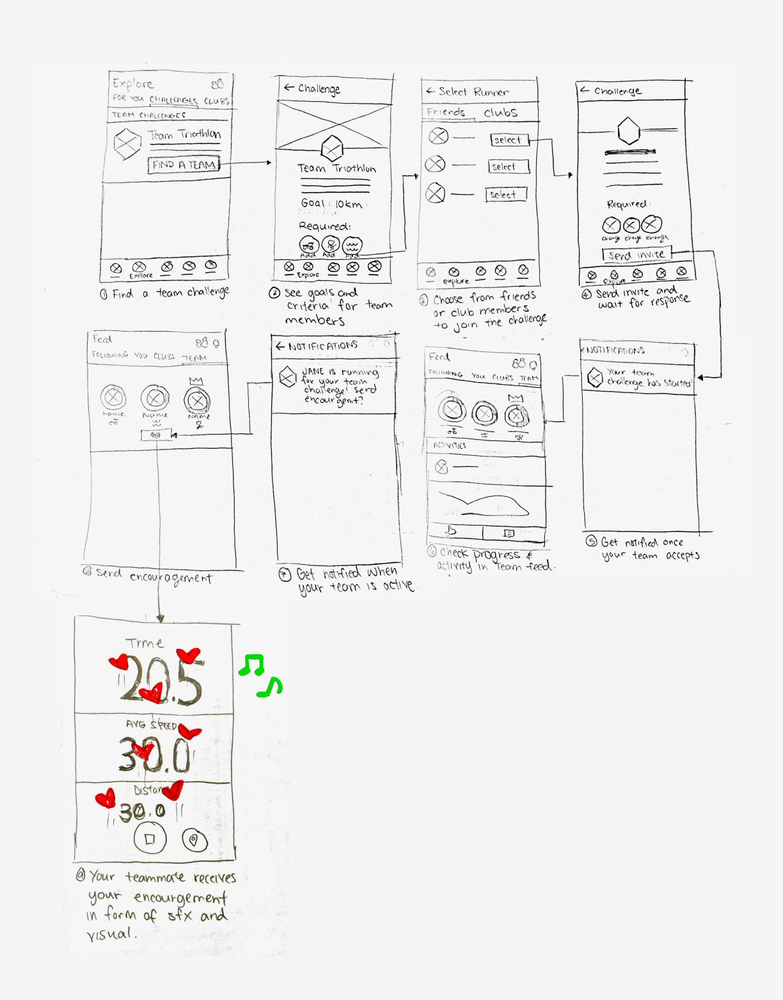

A 3-week project in a group of 4 creating a feature concept that allows users to work together in reaching a common exercise goal while having the freedom to work at their own pace and schedule.
Successes
- Sketched wireflows for design concept, earning buy-in from team members, and translated them into high-fidelity mockups
- Created research-backed personas to understand user needs
- Identified opportunities for new features by planning and conducting user interviews
Problem
Strava is a social network that brings people closer by sharing activities. However, the Challenges feature are individual challenges. We enhanced this feature to explore how the social aspect can be integrated before and during stages of exercising.
Research Insights
Social Motivation
Some athletes are motivated by seeing other people participating in the same activities and through social feedback such as likes and comment on their activities.
Progress Tracking
Many athletes want to keep track of their personal progress. Some share their progress with their friends to receive social motivation, while others track it for personal motivation.
Target Persona
The app experience has little guided exercises, which made it hard to use for beginner athletes. The emphasis on social features and community events meant that the app was more suitable for casual athletes than professional athletes. With this in mind, we formed our persona as a semi-experienced social runner.

Initial Sketches
Due to time constraints, I fleshed out interactions while sketching the wireflows, so that we could save time when translating the sketches later into full-fidelity mockups. Checking in with my teammates regularly allowed us to stay on the same page and I was able to iterate quickly and often.
Fitting Into Strava's Design System
We analyzed Strava's existing design system, including interaction patterns and components, so that our feature could live comfortably in Strava's existing design system.

Finding a Team
We placed team challenges on the same page as individual challenges so users can naturally discover the new feature. Simple icons identify the types of athletes required for each challenge. When inviting a teammate, users are shown a targeted list of friends and club members who have experience in that sport, so it's as easy as one tap to add a teammate.
Tracking Progress and Staying Updated
Once a user has joined a team challenge, a Teams tab appears under their Feed where they can easily see at a glance both their own progress and their team's progress in a simple and clean interface. This also provides a place for members of a team to socialize and share content with each other, a necessity for a subset of users who may only be acquainted on the platform.
Teamwork and Sportsmanship
We wanted to create a way for teammates to encourage each other even while exercising separately. When conceptualizing the form of the cheers, our priority was making sure that it wasn't overly intrusive, as we didn't want to distract athletes from their surroundings as this could be dangerous (eg. runners crossing the street).
Considerations for Implementation
Components of the design are easily scaled and modified based on desired user experience: types of activities in challenge, number of team members, cheers UI, etc. Because we leveraged mostly existing interaction and UI patterns, this requires less resources to create the feature.
Reflection
With only three weeks to learn an entire app and create a concept for a feature that could plausibly live in it, time was definitely a challenge. I did my part by facilitating an app teardown to start the project, going through every page and possible user flow. In just one workshop, we were able to gain a comprehensive understanding of the app's interface, navigation, and interaction patterns. This really helped us move forward quickly, giving us more time to spend on brainstorming and iterating.